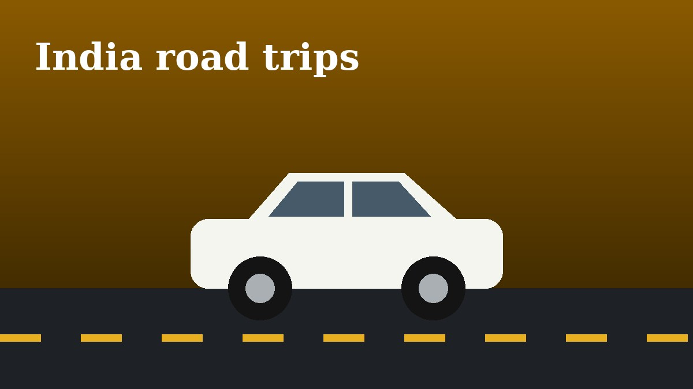

Best Road Trips in India for Car Lovers

The Mumbai to Goa route along the coast is a classic, with sea views and relaxed traffic outside holidays. Start early to enjoy the Konkan stretch with fewer trucks.
For mountains, the Manali to Leh highway offers dramatic passes and high altitude driving. Carry spare fuel, check the road status before leaving and give your car time to acclimatise.
If you prefer wide open tarmac, the Bengaluru to Coorg drive and the Rajasthan desert highways reward a well-tuned car. Plan fuel stops ahead and avoid driving at night in rural areas.